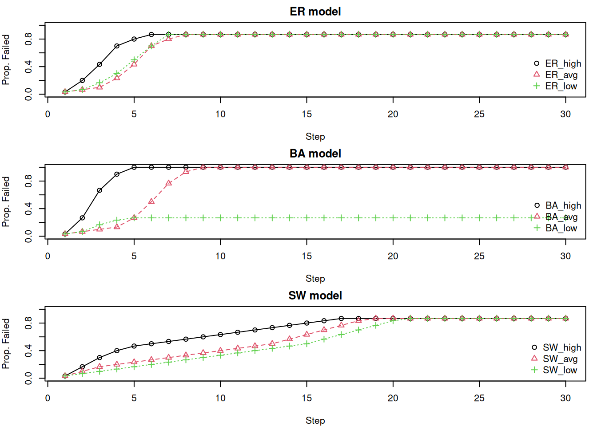
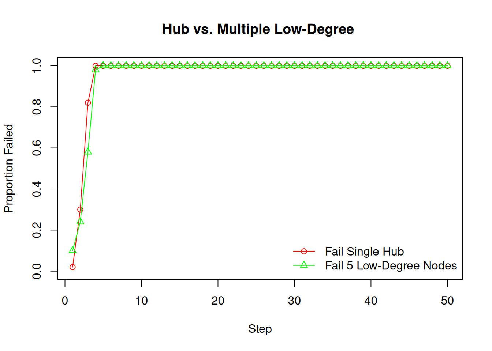
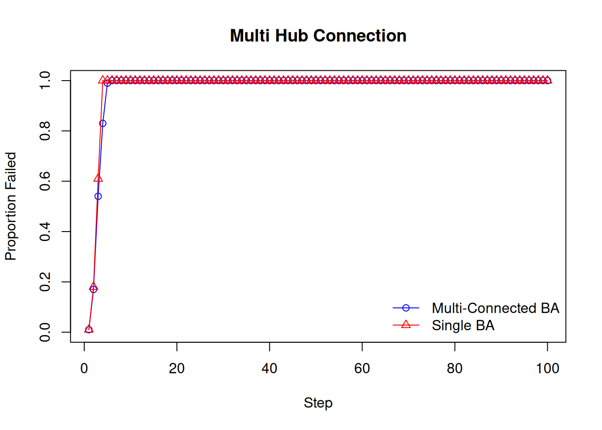

library(igraph)
gs = list(
g1 = sample_gnp(n = 10, p = 0.50),
g2 = sample_gnp(n = 10, p = 0.90))
par(mfcol = c(1,2))
invisible(lapply(gs, plot))Cascading Failures
Failures in graphs?
Well established in this class is the fact that graphs are made up of nodes (components) and edges (links). We have many real-world examples of graphs to take from: the internet, power grids, ecology, physiology, and of course psychological systems.
In these networks, we see the interplay of processes internal and external to the system. Think of a transmission line malfunctioning in an electrical power grid. Or possibly a perturbation to a system that disrupts communication among nodes. These two examples hint at an important dynamical process termed cascading failure or avalanche (if you’re feeling fancy). Although rare, they can have severe consequences. In general, a cascading failure refers to some trigger mechanism that produces further failures in the system which ultimately may lead to a complete collapse of the system (Valdez et al., 2020). Further failures occur because components vary in their ability to handle a certain load that is redistributed to them after an initial failure.
Similarly, in social systems we might think of a cascading failure being dependent on the information other people may have and subsequently their decisions. This is quite common in fads or things that are “hyped-up”. We might choose to wear Levi jeans because many of our peers are wearing Levi jeans. We might choose to see one movie over another based on reviews or recommendations by friends. Economists define these scenarios as binary decisions with externalities (Watts, 2002). Important to note is that a personal threshold must be reached before a transition occurs in conjunction with what others have decided. Furthermore, rather than components failing it is a component transitioning from one state to another.
Cascading failures leads us to questions such as:
How does the structure of a network impact its resilience to failures?
How can we enhance a system to mitigate further cascading failures?
Where are the vulnerable components in a system. Are they the high-degree or low-degree nodes?
When do components transition states (i.e., at a well-defined threshold)?
As an illustrative example:
A group of students are running experiments and simulations in their respective labs. Suddenly a blackout occurs! Welp, there goes their precious research. Let’s explain to these poor students that a cascading failure may have occurred.
Overloading or zeroing of a component in the electrical power grid. A group of Davis bikers crash into a substation.
Power is redistributed from the failed component. There is an increase in the loadings of other components.
The system is stressed out and loadings are higher than the capacity of components. Leading to a cascading failure.
Blackout all around Davis.
Recap on Graph Structures
As we once touched on at some time point long ago, centrality measures can be meaningful if we know a network’s degree distribution. In a similar light, Bringmann and colleagues (2019) argued the relevance of centrality measures in psychology are dependent on how we’re modeling a given system. As we’ll see, the degree distribution of a network not only applies to centrality measures, but also in the context of cascading failures. If the degree distribution of our network follows a Erdős–Rényi graph, does it matter which node we choose to fail? How will a cascading failure differ if our graph is Barabási–Albert versus a Watts-Strogatz? Let’s look at these degree distributions more closely again.
Erdős–Rényi random graph
The Erdős–Rényi random graph is described as a distribution of graphs \(G(n, p)\) where \(n\) is the number of nodes in a graph and \(p\) is the probability of an edge between two nodes.
From what we already learned, we know the degree distribution of this random graph is binomial. Think back to coin flip analogy. There is a \(p\) probability of getting a heads (edge) and a 1-\(p\) probability of tails (no edge).
This gives rise to the probability mass function: \[P(\deg(v) = k) = \binom{n-1}{k} p^k (1 - p)^{n - 1 - k}\]
where \(k \in \{0, 1,\dots, (n-1)\}\). Additionally, if we take the average degree of a Erdős–Rényi random graph we would see that it is close to the \(\mathbb{E}[\deg(v)\). As an example, here we generate two random graphs with the same number of nodes with varying edge probability.
Increasing p increases the average degree as shown below:
mean(degree(gs[[1]]))[1] 5.6mean(degree(gs[[2]]))[1] 7.8Barabási-Albert random graph
If we remember, Barabási-Albert are graphs where nodes preferentially attach to already well-connected nodes. The degree distribution of this random graph follows a “power law”. Formally, this is \(P(k) \sim k^{-\gamma}\), where \(\gamma\) is a scaling parameter in the range of \(2 < \gamma < 3\). Essentially this means many nodes will have few connections and few nodes will have a high degree.
The BA random graph is generated by way of the preferential attachment algorithm. The algorithm starts with a small fully connected network with \(|n_{0}|\) nodes that then has nodes incrementally added. Each node will connect with a probability preferentially for high degree nodes as given below. The procedure repeats until we reach the total number of nodes in the graph.
\[\prod(i) = \frac{\deg(i)}{\sum_{j}\deg(j)}\]
ba.1 = sample_pa(n = 30, power = 1, m = 3, directed = FALSE)
plot(ba.1)Watts-Strogatz Small-Worlds
In this graph, nodes tend to all be relatively close to each other. Nodes can access any other node relatively fast. We see this in real-world networks as local clustering. Formally this graph is, \(G_{WS}(n, k, \beta)\) where \(n\) is the number of nodes, \(k\) is the average degree, and \(\beta\) is the rewiring probability for each edge. Rewiring probability assigns the edge to another node contingent on not already being connected to the node or creating a self-loop.
ws1 = sample_smallworld(dim = 1, nei = 2, size = 10, p = 0.00)
plot(ws1)Interactive Display
BA
ER
WS
The Watt’s model for Cascading Failures
As aforementioned, cascading failures can be thought of as the transitioning of a component from one state to another influenced by the state of neighboring components. The Watt’s model (Watts, 2002) focuses on small initial shocks relative to the size of the network that cascade into large failures of the system. An interesting aspect of cascading failures is that not all shocks result in a global cascade. As we’ll find out, some nodes have a higher threshold and therefore are less vulnerable. Or some nodes are simply less connected than other nodes despite being vulnerable. In short, it’s difficult to predict which node will result in a cascading failure without knowing the structure of the network.
Formal Definition of the Watt’s model
Formally, the Watt’s model can be described as a simple binary decision rule with externalities:
- We have a network of components, G = (\(C\), \(E\)):
- \(C_i\) observes the states of \(K\) other components, essentially its degree.
- \(C_i\) adopts state 1 if at least a threshold fraction (\(\phi\)) of its \(K\) neighbors are state 1, otherwise it stays inactive.
- Component threshold:
- To account for component variation, both the threshold and number of \(K\) neighbors are allowed to be heterogeneous. Each component is assigned a threshold \(\phi\) randomly drawn from a distribution \(f(\phi)\) where \(f(\phi)\) is a distribution defined on \([0,1]\), with \(\int_0^1 f(\phi) \, d\phi = 1\).
- Network connection:
- Each component is connected to \(K\) neighbors with probability \(P_k\) and the average number of neighbors is \(\langle k \rangle = z\). Simply, \(P_k\) is the degree distribution of the graph and \(z\) is the average degree.
- Modeling Dynamics of Cascades
- The population is initially all off (state 0) and perturbed at \(t\) = 0 by a small fraction of \(\phi_0 \ll 1\) that are switched to state 1.
- Subsequent Steps:
- The system evolves at successive time steps with each component updating their state according to their threshold and the rule mentioned in \(\text{step 1}\). Once a component is active in this system it will stay active for the duration of time steps.
Important Considerations
- Local dependencies occur in that the threshold rule ensures a component’s state is determined by the states of neighboring nodes.
- Fraction not a max, the more signal one receives when making a choice, the less important the signal becomes. A key reason why we love In-N-Out’s short menu. In other words, the threshold rule does not take into account all of a component’s neighbors but a fraction.
- A heterogeneous system, this one is self-explanatory.
Coding the Watt’s Model
#Libraries
library(ggplot2)
library(tidyr)
library(dplyr)Watt’s cascade function
cascade.Watts = function(g, thrsh.lim = c(0.1, 0.20), max.steps = 10000){
Cascades = list()
metrics = igraph::degree(g)
# Identify the high, average, and low degree vertices
max_node = which.max(metrics)
if(min(metrics, na.rm = TRUE) == 0){
min_node = which.min(ifelse(metrics != 0 & !is.na(metrics), metrics, 999))
}else(min_node = which.min(ifelse(!is.na(metrics), metrics, 999)))
avg_node = sample(which(abs(metrics - floor(mean(metrics, na.rm = TRUE))) == min(abs(metrics - floor(mean(metrics, na.rm = TRUE))), na.rm = TRUE) & !is.na(metrics)), 1)
seeds = list(high = max_node,
avg = avg_node,
low = min_node)
# For the high, middle, and low vertices initiate a cascade
for(name in names(seeds)) {
target = seeds[[name]]
if(thrsh.lim[1] > thrsh.lim[2]){
message("First limit should be the lower limit! Flipping for you")
thrsh.lim = c(thrsh.lim[2], thrsh.lim[1])
}
# Uniformly apply thresholds to all vertices between limits
V(g)$threshold = runif(vcount(g), min = thrsh.lim[1], max = thrsh.lim[2])
V(g)$state = 0
V(g)$state[target] = 1
flip.count = c(sum(V(g)$state))
step = 0
# Initiate Cascade
while(step < max.steps) {
step = step + 1
new.state = V(g)$state
# For each vertex, check if it failed. If so, skip
# If not, then identify its neighbors
# Check how many of the current vertex's neighbors have failed relative to total
# Compare to threshold; if bigger then fail
# Repeat
for (v in V(g)) {
if (V(g)$state[v] == 1) next
neighbors.v = neighbors(g, v)
if (length(neighbors.v) == 0) next
active_fraction = sum(V(g)$state[neighbors.v]) / length(neighbors.v)
if (active_fraction >= V(g)$threshold[v]) {
new.state[v] = 1
}
}
if(all(new.state == V(g)$state)) break
V(g)$state = new.state
flip.count = c(flip.count, sum(V(g)$state))
}
Cascades[[name]] = flip.count / vcount(g)
}
names(Cascades) = c("High", "Average", "Low")
return(Cascades)
}Simulation function
# Simulation Function
sim.funk = function(rep_id) {
set.seed(3887891 + rep_id)
g_ba = sample_pa(n = n_nodes, power = 1, m = 1, directed = FALSE)
g_er = sample_gnm(n = n_nodes, m = ecount(g_ba), directed = FALSE)
g_sw = sample_smallworld(dim = 1, size = n_nodes, nei = floor(ecount(g_ba)/n_nodes), p = 0.05)
ER.set = cascade.Watts(g_er, c(0.1, 0.2), 10000)
BA.set = cascade.Watts(g_ba, c(0.1, 0.2), 10000)
SW.set = cascade.Watts(g_sw, c(0.1, 0.2), 10000)
list(
ER_high = ER.set$High,
ER_avg = ER.set$Average,
ER_low = ER.set$Low,
BA_high = BA.set$High,
BA_avg = BA.set$Average,
BA_low = BA.set$Low,
SW_high = SW.set$High,
SW_avg = SW.set$Average,
SW_low = SW.set$Low
)
}Plot
# Initial Parameters for Simulation
n_nodes = 30
# Use function
results = sim.funk(1245)
models = c("ER","BA","SW")
max_len = 30
op = par(mfrow=c(3,1), mar=c(4,4,2,1))
for(m in models) {
idx = grep(paste0("^", m, "_"), names(results))
raw = results[idx]
mat = sapply(raw, function(v) {
L = length(v)
if (L < max_len) {
c(v, rep(v[L], max_len - L))
} else {
v[1:max_len]
}
})
matplot(1:max_len, mat,
type = "o", pch = 1:3,
col = 1:3, xlab = "Step",
ylab = "Prop. Failed",
main = paste(m, "model"),
xlim = c(1, max_len),
ylim = c(0, 1))
legend("bottomright", legend = names(results)[idx],
col = 1:3, pch = 1:3, bty = "n")
}
par(op) What if we change the parameters?
N = 300 with same threshold

N = 30, with threshold between .05 and .9
The CASCADE model for Cascading Failures
The CASCADE model focuses on components failing when their load exceeds a threshold, how an initial disturbance loads the system, and how the failure of some components transfers additional load to others (Dobson et al., 2007).
Formal definition of the CASCADE model:
The model considers a system with \(N\) components, each with a random initial load.
- Initial load (\(L_j\)):
- Each component \(j\) (for \(j = 1, 2, ..., N\)) has an initial load \(L_j\).
- The minimum value of a given load is \(L^{\text{min}}\) and the maximum load is \(L^{\text{max}}\).
- \(L_{j}\) is distributed uniformly between \([L^{\text{min}}, L^{\text{max}}]\).
- The initial loads \(L_{1},L_{2},...,L_{N}\) are independent of each other.
- Failure threshold (\(L^\text{fail}\)):
- Components fail if their total load exceeds a certain failure threshold, \(L^\text{fail}\)
- Load transfer (\(P\)):
- When a component fails, a fixed amount of additional load, \(P\), is transferred to each of the other remaining components in the system.
- Initial disturbance (\(D\)):
- The cascade is initiated by an initial disturbance that adds an amount of load \(D\) to each component.
- Normalized initial load (\(\ell_{j}\)):
- The normalized initial load for the \(j^{th}\) vertex is given by \(\ell_{j}\) where:
\[ \ell_{j} = \frac{L_{j} - L^{\text{min}}}{L^{\text{max}} - L^{\text{min}}} \]
- This normalization maps the load \(L_j\) to a value \(\ell_{j}\) that is uniformly distributed on the interval \([0,1]\).
- Normalized parameters:
- The load transfer \(P\) and initial disturbance \(D\) are also normalized. Let \(p\) be the normalized load increment and \(d\) be the normalized initial disturbance:
\[ \begin{aligned} p = & \frac{P}{L^{\text{max}}-L^{\text{min}}} \\ d = & \frac{D + L^{\text{max}} - L^{\text{fail}}}{L^{\text{max}}-L^{\text{min}}} \end{aligned} \]
- Cascading process:
- After the initial disturbance \(D\), components whose total load \((L_j+D)\) exceeds \(L^{\text{fail}}\) will fail.
- The failure of these components then distributes an additional load \(P\) (or \(p\) in normalized terms) to other components, potentially causing further failures. This process continues iteratively, defining the cascade.
Watt’s Cascades vs. CASCADE Model
In Watt’s model for cascading failures, vertices have no thresholds internal to themselves but are influenced entirely by neighbors. In the CASCADE model, vertices have resilience and an initial load such that they can exhibit more nuanced dynamics in how they fail. Let’s break down their differences.
Thresholds and Failure
Watt’s model: Failure is determined by the fraction of a node’s neighbors that have already failed. A node \(i\) with degree \(k_i\) and threshold \(\phi_i\) fails if at least a threshold fraction \(\phi\) out of its \(k\) neighbors are in state 1 (fail state).
CASCADE: Failure is determined by a node’s internal load exceeding its predefined capacity (\(L^{\text{fail}}\)). The threshold is an absolute load limit, not directly dependent on the number or state of its neighbors in the topological sense.
Influence mechanism
Watt’s model: Influence is local and topological. A node is influenced directly and only by the state (failed or not) of its immediate neighbors in the graph. What matters is the structure of the network (who is connected to whom).
CASCADE: Influence is through load redistribution. When a node fails, it transfers a fixed load \(P\) to other components.
Vertex properties
Watt’s model: Vertices are primarily characterized by their degree \(k\) and their individual threshold \(\phi\). There isn’t an explicit concept of “resilience” beyond the threshold itself.
CASCADE: Vertices are characterized by their initial load \(L_j\) and a common failure load \(L^{\text{fail}}\). The “resilience” of a node is the difference between its current load and \(L^{\text{fail}}\). A node with a high initial load is more vulnerable.
Complexity of Dynamics
- Watt’s model: The dynamics are driven by changes in neighbor states. The “vulnerable” nodes (low threshold relative to degree) play a crucial role in initiating widespread cascades.
- In the low connectivity regime, the network is sparse, and cascade propagation is mainly limited by connectivity. At the critical point (the system transitions from safe to vulnerable), cascade sizes follow a power law.
- In the high connectivity regime the network is dense. The propagation of cascades is limited by the stability of individual nodes. Most nodes have many neighbors, making them less susceptible to single-node influence. This results in a bimodal distribution of cascade sizes: many small cascades that die out quickly and, rarely, extremely large global cascades.
- CASCADE: The system dynamics are driven by accumulating load, with overall stress being a key factor. This stress depends on how close the initial loads are to the failure threshold (\(L^{\text{fail}}\)) and the magnitudes of \(D\) and \(P\).
In summary, Watts’ model is more focused on the contagion of states through local, fractional influence within a network, where nodes don’t have intrinsic load capacities but rather susceptibility thresholds. The CASCADE model, conversely, emphasizes the accumulation of load on components that have defined capacities, where failure is a consequence of exceeding this capacity, leading to further load redistribution.
Given these differences, which cascading failure model would be more appropriate to your research area?
Can we know the thresholds for vertices?
In the CASCADE model, the threshold is essentially defined by a node’s capacity and its load. In Watts’ model, the threshold (\(\phi\)) for a node determines the fraction of its neighbors that must be “on” for it to switch “on.”
In engineered/physical systems, the thresholds can often be estimated or are known from design specifications. For example, a power line has a maximum current capacity, a router has a maximum data throughput, and a bridge has a maximum weight limit.
These thresholds are based on physical properties and engineering design tolerances. However, even in these systems, thresholds can be dynamic, affected by environmental conditions (e.g., temperature affecting power line sag and capacity), aging, maintenance levels, or even “hidden failures” where a component’s actual capacity is less than assumed.
In social/economical/biological systems a threshold could relate to the point at which an individual or entity changes their behavior, opinion, or state due to influence from others or accumulated stress.
In Watts’ model, this is the fraction of neighbors adopting a behavior that triggers an individual to also adopt it. For example, in decision making people could assume others have better information and follow their actions. It could also be the desire to align with the perceived majority or norm, or to be influenced by trusted sources.
A biological “failure” can be illustrated by a PhD student who becomes overwhelmed and unable to progress with their research. In this scenario, the threshold could be influenced by factors such as the volume of TA responsibilities, the complexity of the research, and the level of support received from their advisor.
What is a “threshold” for psychological vertices? Is it reasonable to assume psychological symptoms have thresholds for activation influenced by connected symptoms?
An example of insomnia development.
Let’s consider insomnia as a complex system where various psychological and behavioral factors interact. We can conceptualize the transition into a state of chronic insomnia, or the worsening of its symptoms, as a form of cascading failure within an individual’s “sleep regulation network.” Let’s build our example using the popular 3P model (Spielman et al., 1987):
Predisposing Factors: These are like the initial conditions or inherent vulnerabilities of certain nodes in our network. Think of genetic propensity, a tendency towards ruminative thoughts, or a generally anxious disposition. These factors don’t cause insomnia on their own but lower the “failure threshold” of certain psychological states. For example, a “ruminative thought” node might have a naturally lower threshold to become “active” (i.e., start interfering with sleep).
Precipitating Factors: These are the initial “shocks” or “failures” in the system. A stressful life event, a temporary illness, or a change in routine could be a precipitating factor that “activates” or “causes the failure” of an initial set of nodes – perhaps leading to a few nights of poor sleep. In our cascade model, this is the initial \(\phi_0\) of “failed” nodes.
Perpetuating Factors: These are crucial for the “cascade.” These are behaviors and beliefs adopted to cope with initial sleep disturbance but end up reinforcing and exacerbating it.
Take, for example, the node “Excessive Time in Bed”: An individual experiences a few nights of poor sleep (precipitating factor). To compensate, they start spending excessive time in bed (a perpetuating behavior). This “Excessive Time in Bed” node now becomes “active.”
Neighboring Nodes & Thresholds:
This “Excessive Time in Bed” node influences other nodes, like “Sleep Fragmentation” and “Weakened Sleep-Wake Cycle.”
The “Sleep Fragmentation” node might have a threshold: if “Excessive Time in Bed” is active AND, say, “Anxiety about Sleep” (another node, perhaps activated by the precipitating factor) is also active, its threshold is met, and it “fails” (sleep becomes more fragmented).
The “Weakened Sleep-Wake Cycle” node might fail if “Excessive Time in Bed” stays active for a certain duration or intensity.
Weave in graph structures
Contrasting Erdős–Rényi and Barabási–Albert random graphs
Erdős–Rényi (ER) Graphs
In ER graphs, most nodes have a similar number of connections.
They are relatively resilient to the random removal of a few nodes because the connectivity is distributed relatively evenly. A cascade might be triggered if a critical density of nodes fails, overwhelming the capacity of the remaining network.
Since there are no specific “super-hubs,” targeted attacks are not dramatically more effective than random failures unless a significant number of nodes are removed to fragment the network or the attack specifically targets a set of nodes that, if removed, would overload their collective neighbors beyond a critical point.
Once a cascade starts, it might spread more diffusely due to the homogeneity. However, if the overall network is stressed (e.g., low tolerance parameters in capacity models), even this diffuse spread can lead to widespread failure.
Barabási–Albert (BA) Graphs
BA graphs are characterized by a few high-degree “hubs” (specific nodes that are highly connected) and many low-degree nodes.
Removing a random (likely low-degree) node typically has little impact on the overall network integrity because the hubs maintain connectivity.
However, they are more vulnerable to the targeted failure of their hubs. Since hubs are connected to a large number of other nodes and often handle significant portions of network flow or influence, their failure can:
- Disconnect large parts of the network.
- Cause a massive redistribution of load onto their neighbors, which are often less capable of handling such an increase, thereby triggering a cascade.
- Contrary to ER networks, cascades in BA networks can be rapid and devastating. The heterogeneity of node loads means that some nodes are inherently much more critical than others.
Assortativeness in Barabási–Albert Graphs
“A network displays assortative mixing if the nodes in the networks that have many connections tend to be connected to other nodes with many connections. A network is said to be disassortative if the highly connected nodes tend to be connected to nodes with few connections.” (Ash & Newth, 2007, p. 6)
Recall the “rich get richer” property of BA graphs. That means that high-degree nodes tend to connect to many low-degree nodes. The BA graph is generally resilient up to the point that the hub fails.
The failure of a hub immediately affects a large number of low-degree nodes, potentially isolating them or overloading them if they were dependent on it. Cascades might spread outwards from a failed hub to its many low-degree neighbors.
In assortative networks, failure of a hub might be buffered if its load/impact is shared among other connected hubs. The network might be robust if the interconnected core of hubs can handle disturbances.
Real-world networks’ stability
Instead of purely random or preferential attachment, real-world networks can be grown with resilience in mind. This might involve selectively adding redundant links, reinforcing nodes that are becoming too critical, or ensuring that new nodes connect in ways that don’t overly stress existing components. Assortativity can be a tool for this:
By having important nodes (hubs) connect to each other, a robust core can be formed. If one hub in this core fails, other hubs within the core might be able to take up the slack or maintain critical pathways. This can create a resilient core.
In naturally disassortative networks, recognizing that hubs connect to many low-degree, dependent nodes allows for targeted protection strategies.
This structure can also help in “islanding” or modularizing failures. If the core is highly interconnected but has sparser connections to the periphery, a failure within the core might be devastating to the core itself but could potentially be prevented from spreading extensively to the rest of the network.
High clustering provides alternative pathways through which flows can pass, avoiding the failed component.
Longer path lengths also promote robustness of the network. A disturbance needs to pass through a greater number of intermediate steps before the entire network is exposed to failure. Longer delays increase the change the network will resolve the perturbation.
The brain as an example of a Disassortative Network
Certain control systems (hubs) in the brain might manage specific functions (loners).
If such a control system (hub) fails, the downstream dependent functions (loners) will fail. However, this failure might be contained within that “module” without causing catastrophic failure of the entire system (e.g., damage to the occipital lobe causes loss of sight, not death).
This disassortative structure can be a form of modular redundancy, preventing cascades from spreading throughout the entire system.
Coding load-based models
Nodes, \(j = 1, 2, 3, \ldots N\), have an initial load, \(L_j\), and capacity, \(C_j\).
The initial load is calculated based on node degree, \(k_j\), and adjustable parameters \(\alpha\) and \(\beta\), that control the intensity of the initial load on nodes: \(L_j = \beta k^{\alpha}_j\).
The capacity \(C_j\) of each node is proportional to its initial load and a tolerance factor, \(T\): \(C_j = L_j \cdot T\).
Node \(j\) will fail when the load it receives plus the initial load on its own node is greater than its processing capacity, \(L_j + L_{ji} > C_j\)
When a node fails, its current load is redistributed among its still active neighbors. The redistribution is preferential: neighbors with higher degrees (or a function of degree related to \(\alpha\)) receive a larger fraction of the failed node’s load: \(\Delta L_{ji} = L_i \frac{k_j^{\alpha}}{\underset{n \in r_i}{\sum}k_n^{\alpha}}\).
library(ggplot2)
library(tidyr)
library(dplyr)
library(igraph)### "Complex" Xiang Cascade
cascade.Xiang = function(g, beta = 1, T = 1.2, alpha = 1, max.steps = 10000) {
N = vcount(g)
deg = igraph::degree(g)
# Load is based on beta, alpha, and degree
load0 = beta * (deg^alpha)
cap = T * load0
# Choose high, average, and lowest degree vertices
high = which.max(deg)
low = which.min(deg)
avg = which.min(abs(deg - mean(deg)))[1]
seeds = list(High=high, Average=avg, Low=low)
results = lapply(seeds, function(seed) {
load = load0
failed = logical(N)
# Kill the target
# Find neighbors
# Distribute failure to other neighbors
# High degree neighbors take more load
failed[seed] = TRUE
nbrs = as.integer(neighbors(g,seed))
if (length(nbrs)) {
wts = deg[nbrs]^alpha
load[nbrs] = load[nbrs] + load[seed]*(wts/sum(wts))
}
load[seed] = 0
series = sum(failed)/N
t = 1
while (t < max.steps) {
to_fail = which(!failed & (load > cap))
if (!length(to_fail)) break
for (v in to_fail) {
failed[v] = TRUE
nbrs2 = setdiff(as.integer(neighbors(g,v)), which(failed))
if (length(nbrs2)) {
w2 = deg[nbrs2]^alpha
load[nbrs2] = load[nbrs2] + load[v]*(w2/sum(w2))
}
load[v] = 0
}
t = t+1
series[t] = sum(failed)/N
}
series
})
names(results) = names(seeds)
results
}sim.funk = function(rep_id, n_nodes) {
set.seed(15846 + rep_id)
g_ba = sample_pa(n = n_nodes, power = 1, m = 2, directed = FALSE)
g_er = sample_gnm(n = n_nodes, m = ecount(g_ba), directed = FALSE)
g_sw = sample_smallworld(dim = 1, size = n_nodes, nei = floor(ecount(g_ba)/n_nodes), p = 0.05)
ER.set = cascade.Xiang(g_er, beta = 1, T = 1.2, alpha = 1, max.steps = 1000)
BA.set = cascade.Xiang(g_ba, beta = 1, T = 1.2, alpha = 1, max.steps = 1000)
SW.set = cascade.Xiang(g_sw, beta = 1, T = 1.2, alpha = 1, max.steps = 1000)
list(
ER_high = ER.set$High,
ER_avg = ER.set$Average,
ER_low = ER.set$Low,
BA_high = BA.set$High,
BA_avg = BA.set$Average,
BA_low = BA.set$Low,
SW_high = SW.set$High,
SW_avg = SW.set$Average,
SW_low = SW.set$Low
)
}n_nodes = 30
results = sim.funk(34, n_nodes = n_nodes)
models = c("ER","BA","SW")
max_len = 30
op = par(mfrow=c(3,1), mar=c(4,4,2,1))
for(m in models) {
idx = grep(paste0("^", m, "_"), names(results))
raw = results[idx]
mat = sapply(raw, function(v) {
L = length(v)
if (L < max_len) {
c(v, rep(v[L], max_len - L))
} else {
v[1:max_len]
}
})
matplot(1:max_len, mat,
type = "o", pch = 1:3,
col = 1:3, xlab = "Step",
ylab = "Prop. Failed",
main = paste(m, "model"),
xlim = c(1, max_len),
ylim = c(0, 1))
legend("bottomright", legend = names(results)[idx],
col = 1:3, pch = 1:3, bty = "n")
}par(op)What do we see?
ER & SW: Tend to show more uniform failure patterns. The specific starting node (high, avg, low degree) has less differential impact because connectivity is more homogeneous. SW models might take longer to fail completely due to their lattice-like local structure.
BA: Show significant heterogeneity. Failing a high-degree hub often leads to rapid and extensive cascades. Failing a low-degree node might have minimal impact. This is because hubs are often the sole connection for many other nodes.
The choice of which “central” node to target for intervention or to study for failure initiation may depend on first understanding the network’s underlying degree distribution. For example, targeting a high-degree node seems critical in a power-law network but less so in an ER network.
Targeting multiple weak nodes
Show the code
cascade.Xiang.multi = function(g, seed, beta = 1, T_cap = 1.2, alpha = 1, max.steps = 10000) {
N = vcount(g)
deg = igraph::degree(g)
load0 = beta * (deg^alpha)
cap = T_cap * load0
load = load0
failed = logical(N)
failed[seed] = TRUE
for(s in seed){
nbrs = as.integer(neighbors(g, s))
active_nbrs = nbrs[!failed[nbrs]] # neighbors that are not themselves initial targets
if (length(active_nbrs) > 0) {
# use a small epsilon for degrees if they are 0 to avoid 0 weights if alpha > 0
# or sum(wts) = 0 if all active_nbrs have deg=0
deg_active_nbrs = deg[active_nbrs]
wts = (deg_active_nbrs + ifelse(deg_active_nbrs==0, 1e-9, 0))^alpha
if(sum(wts) > 0){
load[active_nbrs] = load[active_nbrs] + load0[s] * (wts / sum(wts))
} else if (length(active_nbrs) > 0) { # if sum(wts) is 0 but there are neighbors (e.g. all deg=0)
load[active_nbrs] = load[active_nbrs] + load0[s] / length(active_nbrs) # Distribute evenly
}
}
load[s] = 0
}
series = c(sum(failed) / N)
step = 0
while (step < max.steps) {
step = step + 1
# identify nodes that will fail in this step
to_fail = which(!failed & (load > cap))
if (!length(to_fail)) break
failed_nodes = c() # track nodes that actually fail in this iteration
for (v in to_fail) {
if(failed[v]) next # should not happen due to `which` condition, but safe check
failed[v] = TRUE
failed_nodes = c(failed_nodes, v)
load_to_redistribute = load[v] # this is the load that causes failure
load[v] = 0
nbrs2 = as.integer(neighbors(g, v))
# redistribute only to neighbors that are not already marked as failed
active_nbrs2 = nbrs2[!failed[nbrs2]]
if (length(active_nbrs2) > 0) {
deg_active_nbrs2 = deg[active_nbrs2]
w2 = (deg_active_nbrs2 + ifelse(deg_active_nbrs2==0, 1e-9, 0))^alpha
if(sum(w2) > 0){
load[active_nbrs2] = load[active_nbrs2] + load_to_redistribute * (w2 / sum(w2))
} else if (length(active_nbrs2) > 0) {
load[active_nbrs2] = load[active_nbrs2] + load_to_redistribute / length(active_nbrs2)
}
}
}
series = c(series, sum(failed) / N)
}
return(series)
}Show the code
set.seed(8852)
n_nodes = 50
m_param = 2
n_min_deg_nodes = 5 # number nodes with the minimum degree
g_ba = sample_pa(n=n_nodes, power=1, m=m_param, directed=FALSE)
V(g_ba)$id = 1:vcount(g_ba)
# 1. Identify target nodes
hub = which.max(degree(g_ba))
# Select multiple low-degree nodes
# For example, all nodes with the minimum degree, or a sample of nodes with low degrees
deg = igraph::degree(g_ba)
min_deg = min(deg[deg > 0]) # Smallest non-zero degree
# Take up to nodes with the minimum degree, or fewer if not that many exist
low_deg = V(g_ba)[deg == min_deg]$id
if(length(low_deg) > n_min_deg_nodes) {
low_deg = sample(low_deg, n_min_deg_nodes)
}
if(length(low_deg) == 0 && min_deg > 0) { # if no nodes at true min_deg
low_deg = V(g_ba)[order(deg)[1:min(n_min_deg_nodes, n_nodes)]]$id
} else if (length(low_deg) == 0){ # if all are 0 degree except hub
cat("Warning: Could not find suitable low-degree nodes.\n")
low_deg = V(g_ba)[order(deg)[1]]$id # just pick the lowest
}
# 2. Run Cascades using Xiang et al.'s model
cascade_hub_xiang = cascade.Xiang.multi(g = g_ba,
seed = hub,
T_cap = 1.1,
alpha = 1,
max.steps = 10000)
cascade_low_xiang = cascade.Xiang.multi(g = g_ba,
seed = low_deg,
T_cap = 1.1,
alpha = 1,
max.steps = 10000)
max_len = max(length(cascade_hub_xiang), length(cascade_low_xiang), n_nodes)
padded_hub = c(cascade_hub_xiang, rep(tail(cascade_hub_xiang,1), max_len - length(cascade_hub_xiang)))
padded_low = c(cascade_low_xiang, rep(tail(cascade_low_xiang,1), max_len - length(cascade_low_xiang)))
plot(padded_hub, type="o", col="red", pch=1, ylim=c(0,1),
xlab="Step", ylab="Proportion Failed", main="Hub vs. Multiple Low-Degree ")
lines(padded_low, type="o", col="green", pch=2)
legend("bottomright", legend=c("Fail Single Hub",
paste("Fail", n_min_deg_nodes,"Low-Degree Nodes")),
col=c("red", "green"), pch=c(1,2), lty=1, bty="n")
Attacking one hub in the presence of multiple hubs
Show the code
set.seed(11123)
n1 = 50
n2 = 50
m_param = 2
num_additional_inter_edges = 0 # number of EXTRA edges to connect hub neighborhoods
# 1. Create two BA graphs
g1 = sample_pa(n=n1, power=1, m=m_param, directed=FALSE)
V(g1)$name = paste0("g1v", 1:vcount(g1))
g2 = sample_pa(n=n2, power=1, m=m_param, directed=FALSE)
V(g2)$name = paste0("g2v", 1:vcount(g2))
# 2. Find the hub (highest degree node) in each graph
hub1 = which.max(degree(g1))
hub2 = which.max(degree(g2))
# Get neighbors of these hubs in their original graphs
nbrs_hub1 = neighbors(g1, hub1)
nbrs_hub2 = neighbors(g2, hub2)
# 3. Combine the graphs
combined_g = disjoint_union(g1, g2)
# 4. Identify hubs and their neighbors in the combined graph
hub1_combined = hub1
hub2_combined = n1 + hub2
# Map original neighbor indices to combined graph indices
neighbors_hub1_combined = as.integer(nbrs_hub1) # these are already correct as they are from g1
neighbors_hub2_combined = as.integer(nbrs_hub2) + n1 # offset for g2 nodes
# 5. Add edges to connect the hub regions
edges_to_add = c()
# 5a. Direct hub-to-hub connection
edges_to_add = c(edges_to_add, hub1_combined, hub2_combined)
# 5b. Additional sparse connections between hub neighborhoods
if (length(neighbors_hub1_combined) > 0 && length(neighbors_hub2_combined) > 0 && num_additional_inter_edges > 0) {
# Ensure we don't try to sample more unique pairs than available
max_edges = length(neighbors_hub1_combined) * length(neighbors_hub2_combined)
edges_to_attempt = min(num_additional_inter_edges, max_edges)
added_count = 0
attempt_limit = edges_to_attempt * 5 # try a few times to get unique edges
current_attempts = 0
# store existing edges to check for duplicates
existing_edges_mat = as_edgelist(combined_g, names=FALSE)
if(length(edges_to_add) > 0) { # include the hub-hub edge if already defined
existing_edges_mat = rbind(existing_edges_mat, matrix(edges_to_add, ncol=2, byrow=TRUE))
}
while(added_count < edges_to_attempt && current_attempts < attempt_limit){
current_attempts = current_attempts + 1
# randomly pick one neighbor from each hub's neighborhood
n1_sample = sample(neighbors_hub1_combined, 1)
n2_sample = sample(neighbors_hub2_combined, 1)
new_edge = sort(c(n1_sample, n2_sample)) # sort to handle undirected nature for duplicate check
# check if this edge (or its reverse) already exists or is planned
is_duplicate = FALSE
if (nrow(existing_edges_mat) > 0) {
for(k in 1:nrow(existing_edges_mat)){
if(all(sort(existing_edges_mat[k,]) == new_edge)){
is_duplicate = TRUE
break
}
}
}
# check against already selected additional edges for this loop
if (!is_duplicate && length(edges_to_add) > 0) {
temp_added_edges = matrix(edges_to_add, ncol=2, byrow=TRUE)
for(k in 1:nrow(temp_added_edges)){
if(all(sort(temp_added_edges[k,]) == new_edge)){
is_duplicate = TRUE
break
}
}
}
if(!is_duplicate){
edges_to_add = c(edges_to_add, n1_sample, n2_sample)
added_count = added_count + 1
cat("Adding inter-neighborhood edge between", n1_sample, "and", n2_sample, "\n")
}
}
}
# create the final connected graph
combined_g_connected_multi = add_edges(combined_g, edges_to_add)
V(combined_g_connected_multi)$id = 1:vcount(combined_g_connected_multi)
# 6. Create a single BA graph of comparable size for comparison (as before)
n_total = n1 + n2
g_single_ba = sample_pa(n=n_total, power=1, m=m_param, directed=FALSE)
V(g_single_ba)$id = 1:vcount(g_single_ba)
# 7. Run Cascades and Compare
# fail one of the original hubs in the multi-connected graph
seed_multi_connected = hub1
cascade_multi_connected_xiang = cascade.Xiang.multi(
g = combined_g_connected_multi,
seed = seed_multi_connected,
T_cap = 1.2, alpha = 1)
# cascade in the single BA graph, failing its main hub
hub_single_ba = which.max(degree(g_single_ba))
cascade_single_ba_xiang = cascade.Xiang.multi(
g = g_single_ba,
seed = hub_single_ba,
T_cap = 1.2, alpha = 1)
max_len = max(length(cascade_multi_connected_xiang),
length(cascade_single_ba_xiang), n_total)
if(length(cascade_multi_connected_xiang) < max_len) {
padded_multi_connected_xiang = c(cascade_multi_connected_xiang,
rep(tail(cascade_multi_connected_xiang,1),
max_len - length(cascade_multi_connected_xiang)))
} else {
padded_multi_connected_xiang = cascade_multi_connected_xiang[1:max_len]
}
padded_single_ba_xiang = cascade_single_ba_xiang
if(length(cascade_single_ba_xiang) < max_len) {
padded_single_ba_xiang = c(cascade_single_ba_xiang, rep(tail(cascade_single_ba_xiang,1),
max_len - length(padded_single_ba_xiang)))
} else {
padded_single_ba_xiang = cascade_single_ba_xiang[1:max_len]
}
plot(padded_multi_connected_xiang, type="o", col="blue", pch=1, ylim=c(0,1),
xlab="Step", ylab="Proportion Failed", main="Multi Hub Connection")
lines(padded_single_ba_xiang, type="o", col="red", pch=2)
legend("bottomright",
legend=c("Multi-Connected BA",
"Single BA"),
col=c("blue", "red"), pch=c(1,2), lty=1, bty="n")
Discussion
- For Psychological Networks, how do abstract concepts like “load,” “capacity,” and “threshold” translate?
- “Load” could be ongoing stress, cognitive burden, or the current activation level of a symptom.
- “Capacity” could be an individual’s coping resources, resilience, or the threshold at which a symptom becomes overwhelming and “spills over” to affect other areas/symptoms.
- In a electrical power grid, repairs of damaged equipment, frequent maintenance, equipment replacement with more potent ones, or using alarm systems, are some response options to reduce the probability of blackouts. In psychological networks,
- What could be an example of a weak system?
- What could be mitigation and reinforcement strategies to prevent or contain cascades? How to identify and reinforce critical components?
Disclaimer
MC used AI to help with writing and to generate ideas for text and code.
References
Ash, J., & Newth, D. (2007). Optimizing complex networks for resilience against cascading failure. Physica A: Statistical Mechanics and Its Applications, 380, 673–683. https://doi.org/10.1016/j.physa.2006.12.058
Dobson, I., Carreras, B. A., Lynch, V. E., & Newman, D. E. (2007). Complex systems analysis of series of blackouts: Cascading failure, critical points, and self-organization. Chaos: An Interdisciplinary Journal of Nonlinear Science, 17(2), 026103. https://doi.org/10.1063/1.2737822
Spielman, A. J., Caruso, L. S., & Glovinsky, P. B. (1987). A behavioral perspective on insomnia treatment. The Psychiatric Clinics of North America, 10(4), 541–553. https://www.ncbi.nlm.nih.gov/pubmed/3332317
Valdez, L. D., Shekhtman, L., La Rocca, C. E., Zhang, X., Buldyrev, S. V., Trunfio, P. A., Braunstein, L. A., & Havlin, S. (2020). Cascading failures in complex networks. Journal of Complex Networks, 8(2), cnaa013. https://doi.org/10.1093/comnet/cnaa013
Watts, D. J. (2002). A simple model of global cascades on random networks. PNAS, 9(99). https://doi.org/10.1073 pnas.082090499